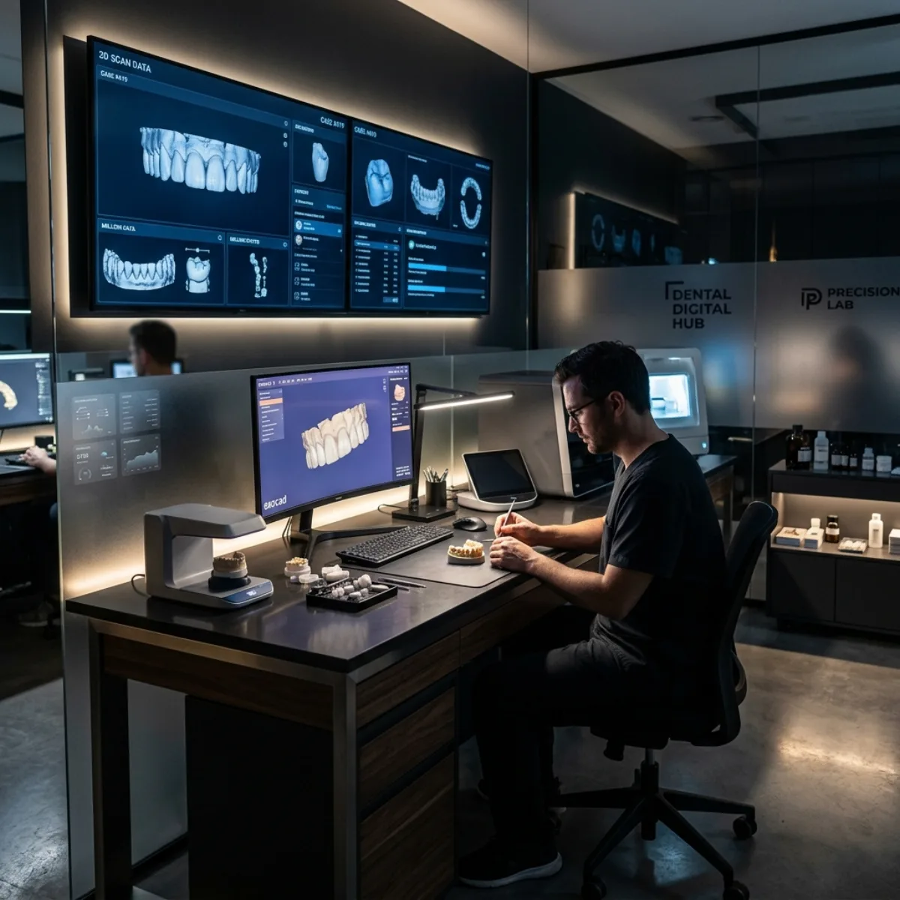
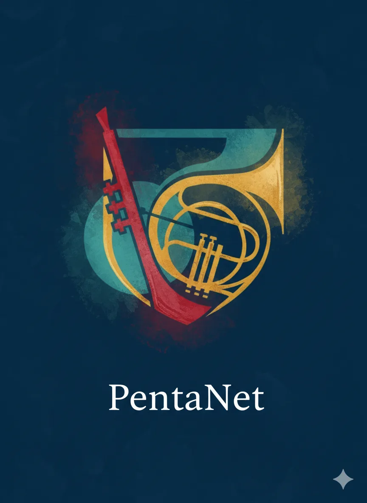

Backend
APIs REST seguras, persistencia y tiempo real
- Java
- Spring Boot
- Hibernate / JPA
- APIs REST
- JWT
- WebSocket
- Swagger
Desarrollador Full-Stack con base en Java y Spring Boot · Angular · Flutter · APIs REST · Bases de datos SQL
Soy Técnico Superior en Desarrollo de Aplicaciones Multiplataforma y desarrollador full-stack con base en backend: construyo APIs REST con Java y Spring Boot, con autenticación JWT y una arquitectura por capas limpia y fácil de mantener.
También trabajo el resto del stack: apps móviles en Flutter conectadas a mis propios backends y, en mis prácticas en Luce IT, interfaces con Angular y TypeScript dentro del equipo de frontend. He trabajado con MySQL y MongoDB, y uso Git en todos mis proyectos. Me importa que el código se entienda y que cada cosa esté en su sitio.
Además estudio el Grado Profesional de Música (trombón) en el Conservatorio de Valladolid. Compaginarlo con la informática me ha enseñado a ser constante, organizarme bien y cuidar los detalles.
APIs REST seguras, persistencia y tiempo real
Interfaces con Angular a nivel profesional
Apps multiplataforma conectadas a mis backends
Bases de datos y control de versiones

Jun 2026 – Actualidad · En solitario · En producción
Aplicación full-stack para laboratorios dentales con Angular y Spring Boot.
Sustituye la pizarra física de un laboratorio dental por un panel digital en tiempo real. Pizarra de pedidos con vistas de tabla, Kanban, calendario y por técnico, notificaciones automáticas por WebSocket ante pedidos vencidos o pruebas devueltas, y control de acceso por roles (administrador / técnico).

2024 – 2026 · Proyecto final del DAM · En solitario
Aplicación full-stack para centros educativos con Flutter y Spring Boot.
PentaNet es una solución integral que centraliza la vida académica. Incluye control de roles (admin, profesor, alumno y secretaria), gestión de horarios, sistema de reserva de aulas en tiempo real, mensajería interna y expedientes académicos. Backend robusto con Spring Boot y frontend multiplataforma con Flutter.

2025 – Actualidad · En solitario
Single Page Application (SPA) en React con Tailwind CSS y componentes accesibles de Radix UI.
Web interactiva con secciones de inicio, biografía, calendario, galería y contacto. Arquitectura basada en componentes reutilizables, diseño completamente responsive y una experiencia de usuario fluida con diseño moderno.
Luce IT · Valladolid
Conservatorio Profesional de Música · Valladolid
Formación artística paralela a los estudios técnicos, desarrollando disciplina, constancia y capacidad de trabajo a largo plazo. Esta etapa refuerza mi capacidad de concentración y el trabajo en equipo dentro de agrupaciones musicales.
IES Ribera de Castilla · Valladolid
Formación en desarrollo backend con Java y Spring Boot, desarrollo móvil con Kotlin y Flutter, bases de datos relacionales y no relacionales, y diseño de aplicaciones cliente-servidor.
QR Informática · Valladolid
IES Ribera de Castilla · Valladolid
Formación en administración de sistemas, redes, mantenimiento de equipos, instalación de sistemas operativos y soporte técnico. Base sólida en infraestructura y funcionamiento interno del software y hardware.
Manufacturas Polisac · Nava de la Asunción (Segovia)